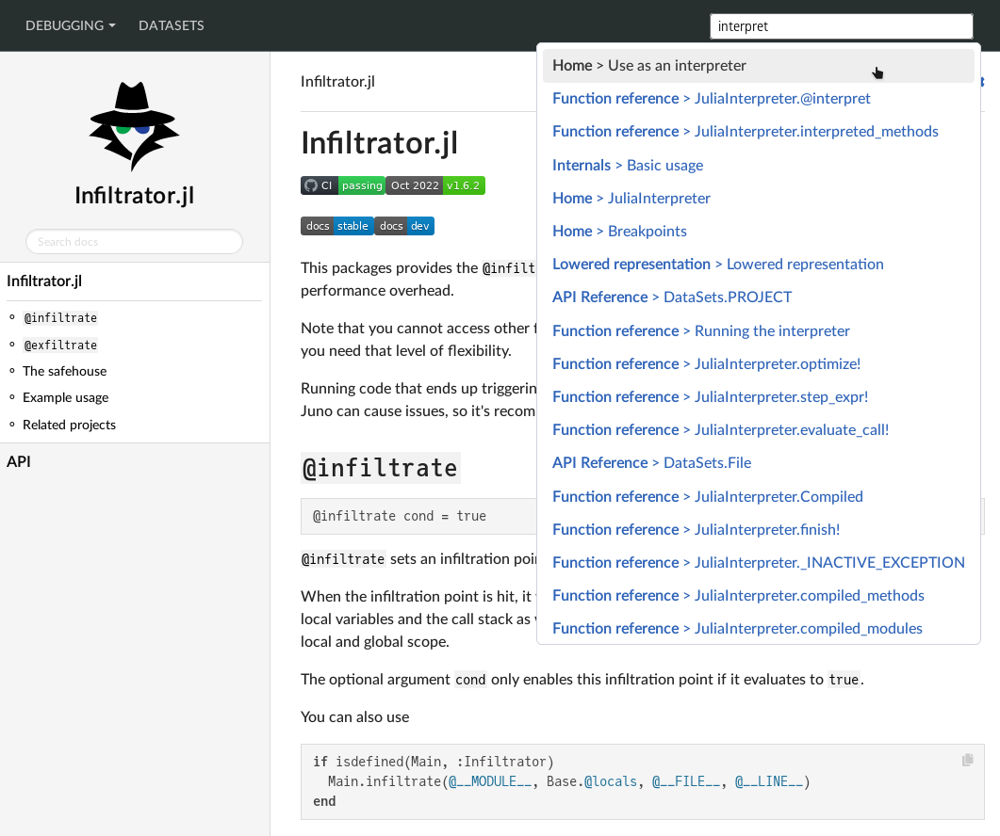

MultiDocumenter
This package aggregates Documenter.jl documentation from multiple sources into one page with a global search bar.
Example usage
using MultiDocumenter
clonedir = mktempdir()
docs = [
MultiDocumenter.DropdownNav("Debugging", [
MultiDocumenter.MultiDocRef(
upstream = joinpath(clonedir, "Infiltrator"),
path = "inf",
name = "Infiltrator",
giturl = "https://github.com/JuliaDebug/Infiltrator.jl.git",
),
MultiDocumenter.MultiDocRef(
upstream = joinpath(clonedir, "JuliaInterpreter"),
path = "debug",
name = "JuliaInterpreter",
giturl = "https://github.com/JuliaDebug/JuliaInterpreter.jl.git",
),
]),
MultiDocumenter.MegaDropdownNav("Mega Debugger", [
MultiDocumenter.Column("Column 1", [
MultiDocumenter.MultiDocRef(
upstream = joinpath(clonedir, "Infiltrator"),
path = "inf",
name = "Infiltrator",
giturl = "https://github.com/JuliaDebug/Infiltrator.jl.git",
),
MultiDocumenter.MultiDocRef(
upstream = joinpath(clonedir, "JuliaInterpreter"),
path = "debug",
name = "JuliaInterpreter",
giturl = "https://github.com/JuliaDebug/JuliaInterpreter.jl.git",
),
]),
MultiDocumenter.Column("Column 2", [
MultiDocumenter.MultiDocRef(
upstream = joinpath(clonedir, "Infiltrator"),
path = "inf",
name = "Infiltrator",
giturl = "https://github.com/JuliaDebug/Infiltrator.jl.git",
),
MultiDocumenter.MultiDocRef(
upstream = joinpath(clonedir, "JuliaInterpreter"),
path = "debug",
name = "JuliaInterpreter",
giturl = "https://github.com/JuliaDebug/JuliaInterpreter.jl.git",
),
]),
]),
MultiDocumenter.MultiDocRef(
upstream = joinpath(clonedir, "DataSets"),
path = "data",
name = "DataSets",
giturl = "https://github.com/JuliaComputing/DataSets.jl.git",
# or use ssh instead for private repos:
# giturl = "git@github.com:JuliaComputing/DataSets.jl.git",
),
]
outpath = joinpath(@__DIR__, "out")
MultiDocumenter.make(
outpath,
docs;
search_engine = MultiDocumenter.SearchConfig(
index_versions = ["stable"],
engine = MultiDocumenter.FlexSearch
)
)Limiting copied versions and linking to all upstream versions
When aggregating many packages, you can copy only selected deployed versions to reduce storage size of the final website:
MultiDocumenter.MultiDocRef(
upstream = joinpath(clonedir, "SomePackage"),
path = "SomePackage",
name = "SomePackage.jl",
giturl = "https://github.com/SomeOrg/SomePackage.jl.git",
versions = MultiDocumenter.VersionSelection(
["stable", "dev"];
# optional: adds a "See All Versions" entry to the version selector
all_versions_url = "https://someorg.github.io/SomePackage.jl/",
),
)- Only the listed version directories are copied (plus root files like
index.htmlandversions.js). Versions that do not exist upstream are reported and skipped; if none of them exist, all versions are copied. - The package's
index.htmlis regenerated to redirect to the first version that was copied, and that version becomes the canonical one for the package, so list them in the order you want. versions.jsis rewritten to include only copied versions, and Documenter's "outdated version" markers (DOCUMENTER_NEWEST,DOCUMENTER_STABLE) are repointed at versions that were copied.- If
all_versions_urlis set, the version selector gets aSee All Versionsentry pointing there, so that the versions that were not copied stay reachable on the upstream site. It must be an absolutehttp(s)URL naming the site root, and is not derived fromgiturl.

Deployment
Check .github/workflows/deploy.yml and docs/make.jl for an example on how to deploy MultiDocumenter-generated aggregates to a git branch.
The result of that script is available at https://juliacomputing.github.io/MultiDocumenter.jl/.
You can of course also just push the output artefact directly to S3 or some other hosting service.
Warning MultiDocumenter sites can not be deployed on Windows right now, and the
make()function will throw an error. See #70.It is still possible to develop and debug MultiDocumenter sites on Windows if the build script is run interactively (e.g. by
include-ing it into a REPL session).
Docstrings
MultiDocumenter.DropdownComponent — Typeabstract type DropdownComponentThe supertype for any component that can be put in a dropdown column and rendered using MultiDocumenter.render(::YourComponent, thispagepath, dir, prettyurls).
All DropdownComponents go in Columns, which go in MegaDropdownNav.
Any subtype of DropdownComponent must implement that render method.
The main subtype is MultiDocRef, which refers to external documentation and adds it to the search index. However, there are others like Link which is used to link to external sites without making them searchable, and users can implement their own custom components.
MultiDocumenter.Link — TypeLink([text::String], link::String, [isexternal::Bool]) <: DropdownComponentRepresents a link to an external site.
MultiDocumenter.MultiDocRef — Typestruct MultiDocRef <: DropdownComponent
MultiDocRef(; upstream, name, path, giturl = "", branch = "gh-pages", fix_canonical_url = true, versions = nothing)Represents one set of docs that will get an entry in the MultiDocumenter navigation.
Required arguments:
upstream: the local directory where the documentation is located. Ifgiturlis passed, MultiDocumenter will clone into this directory.name: string used in the MultiDocumenter navigation for this itempath: the URL path under which the contents of upstream is placed
Optional arguments:
giturl: URL of the remote Git repository that will be cloned. If this is unset, thenupstreammust be an existing directory.branch: Git branch ofgiturlwhere the docs will be pulled from (defaults togh-pages)fix_canonical_url: this can be set tofalseto disable the canonical URL fixing for thisMultiDocRef(see alsocanonical_domainformake).versions: aVersionSelection, to copy only some of the deployed versions instead of the wholeupstreamtree. All versions are copied by default. Root files (e.g.index.html,versions.js) are always copied. When a selection is given,versions.jsis rewritten to list only the copied versions, andDOCUMENTER_NEWEST/DOCUMENTER_STABLEare repointed at copied versions so that Documenter does not mark kept pages as outdated (andnoindex) or link its banner at a version that is no longer there.
MultiDocumenter.SearchConfig — TypeSearchConfig(index_versions = ["stable"], engine = MultiDocumenter.PageFind, lowfi = false)index_versions is a vector of relative paths used for generating the search index. Only the first matching path is considered (except for PageFind, which indexes all of them). This is one global list, so a MultiDocRef that publishes none of these paths – e.g. because its VersionSelection keeps different ones – contributes nothing to the search index; MultiDocumenter warns about each such ref during the build. engine may be MultiDocumenter.PageFind, MultiDocumenter.FlexSearch, MultiDocumenter.Stork, or a module that conforms to the expected API (which is currently undocumented). lowfi = true will try to minimize search index size. Only relevant for flexsearch.
MultiDocumenter.VersionSelection — Typestruct VersionSelection
VersionSelection(versions; all_versions_url = nothing)Selects which deployed versions of a MultiDocRef are copied into the aggregate, and where the ones that are left out can still be found.
Aggregating packages with long gh-pages histories can push the combined site past a host's size limit (GitHub Pages allows 1 GB), and most of that history is rarely read. Copying only ["stable", "dev"] keeps the site small; all_versions_url then keeps the rest reachable.
versions: the version directories to copy, e.g.["stable", "dev"]. Entries that do not exist upstream are reported and skipped; if none of them exist, all versions are copied instead. The first version that was copied is what the ref'sindex.htmlredirects to and what MultiDocumenter treats as canonical, so the order matters.all_versions_url: absolute http(s) URL of the upstream documentation site root, e.g.https://org.github.io/Pkg.jl/. When given, a "See All Versions" entry pointing there is added to the version selector. Use the site root rather than a specific version: Documenter's selector tries to stay on the equivalent page, so it may append the current page's path to this URL.
MultiDocumenter.VersionSelection(
["stable", "dev"];
all_versions_url = "https://org.github.io/Pkg.jl/",
)MultiDocumenter.cp_select_versions — MethodCopy all root files and the listed version directories from src to dst, skipping .git and any version directory not in versions.
Returns the subset of versions that was actually copied, in the given order. Requested versions that are missing upstream, or are symlinks with no target left (which happens on gh-pages branches where old version directories were pruned by hand), are reported and skipped rather than aborting the build.
Everything is copied with follow_symlinks = true, so that e.g. stable -> v5.5.0 becomes a real directory and the result does not depend on paths that were not copied.
MultiDocumenter.inject_see_all_versions_option! — MethodAdd a "See All Versions" entry to Documenter's version selector, pointing at url.
Documenter's own selector code (assets/html/js/versions.js) only ever appends to the selector – it never clears it, and it matches the versions from DOC_VERSIONS against existing options by their text. So an <option> written in at build time survives untouched and needs no client side code; it ends up above the versions Documenter fills in.
Selecting it hands over to Documenter's own handler, which tries to stay on the same page: it appends the current path below the version directory to url, HEADs that, and falls back to url itself if the probe fails. url should therefore name a site root – point it at a specific version and a visitor of .../stable/man/guide.html may well land on .../<that version>/man/guide.html instead of the page you meant.
Pages without a version selector (e.g. the redirect stubs) are left alone.
MultiDocumenter.is_generated_redirect — MethodWhether page is a generated redirect stub rather than a rendered documentation page.
Injecting stylesheets and scripts into these would make a page whose only job is to redirect first fetch and run the whole aggregate front end, and would destroy the marker itself.
MultiDocumenter.make — Methodmake(
outdir,
docs::Vector{MultiDocRef};
assets_dir,
brand_image,
custom_stylesheets = [],
custom_scripts = [],
search_engine = SearchConfig(),
prettyurls = true,
rootpath = "/",
hide_previews = true,
canonical = nothing,
)Aggregates multiple Documenter.jl-based documentation pages docs into outdir.
assets_diris copied intooutdir/assetsbrand_imageis aBrandImage(path, imgpath), which is rendered as the leftmost item in the global navigationcustom_stylesheetsis aVector{String}of relative stylesheet URLs injected into each page.custom_scriptsis aVector{Union{String, Docs.HTML}}. Strings can be relative or absolute URLs, whileDocs.HTMLobjects are inserted as the content of inline scripts.search_engineinserts a global search bar if notfalse. SeeSearchConfigfor more details.prettyurlsremoves allindex.htmlsuffixes from links in the global navigation.rootpathis the path your site ends up being deployed at, e.g./foo/if it's hosted athttps://bar.com/foohide_previewsremoves preview builds from the aggregated documentation.canonical_domain: determines the the schema and authority (domain) of the (e.g.https://example.org) deployed site. If set, MultiDocumenter will check and, if necessary, update the canonical URL tags for each package site to point to the correct place directory. Similar to thecanonicalargument ofDocumenter.HTMLconstructor, except that it should not contain the path component – that is determined fromrootpath.sitemap, if enabled, will generate asitemap.xmlfile at the root of the output directory. Requirescanonical_domainto be set, since the sitemap is determined from canonical URLs.sitemap_filenamecan be used to override the default sitemap filename (sitemap.xml)
MultiDocumenter.newest_kept_version — MethodThe highest version number among the copied version directories, or nothing if none of them holds a release (e.g. only dev was kept, which never triggers the banner anyway).
MultiDocumenter.rewrite_stable_target! — MethodPoint DOCUMENTER_STABLE in each copied siteinfo.js at a directory that still exists.
Documenter's "older version" banner links to ../$(DOCUMENTER_STABLE), which 404s if the stable directory was not among the copied versions.
MultiDocumenter.rewrite_versions_js — MethodRewrite versions.js so that the version selector only offers kept_versions, and so that DOCUMENTER_NEWEST names the newest version we kept.
DOCUMENTER_NEWEST matters because Documenter's warner.js compares it against each directory's DOCUMENTER_CURRENT_VERSION and, on a mismatch, marks the page noindex and shows an "older version" banner. Left pointing at a version that was not copied, that de-indexes perfectly current pages.
MultiDocumenter.see_all_versions_url_for — MethodThe "See All Versions" URL that applies to the page at relative_path, if any.
At most one ref can match: two refs whose paths nest would copy over each other in make_output_structure to begin with.
MultiDocumenter.see_all_versions_urls — MethodMap the output subdirectory of each version-limited MultiDocRef to its "See All Versions" URL. Refs that copy all their versions get no entry: the point of the link is to reach the versions that were left out, and there are none.
MultiDocumenter.stable_target — MethodThe copied directory that DOCUMENTER_STABLE should point at, if we can name one.
MultiDocumenter.version_of_directory — MethodThe version a copied version directory holds, as recorded in its siteinfo.js.
MultiDocumenter.warn_unindexed_refs — MethodWarn about any MultiDocRef that will contribute nothing to the search index.
SearchConfig.index_versions is a single global list, but each ref decides for itself which versions it publishes (see VersionSelection), so a ref can easily end up with none of the indexed version directories in its output. Its pages are then published and linked from the navigation, but unreachable through the search box – which is easy to miss, since nothing else about the build looks wrong.